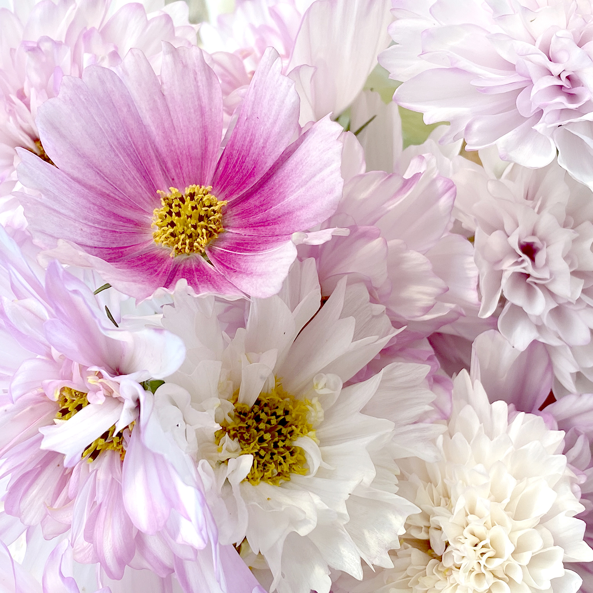

Gardening
Learn about what's getting planted in the garden this season.

See what's buzzing in the backyard hives.

Explore my favorite resources for inspiration and information on starting your own garden.
This site is a small love letter to two of my favorite summer hobbies – flower gardening and beekeeping. Explore each page to learn a little more about what's happening in my backyard this season.
Learn about what's getting planted in the garden this season.
See what's buzzing in the backyard hives.
Explore my favorite resources for inspiration and information on starting your own garden.